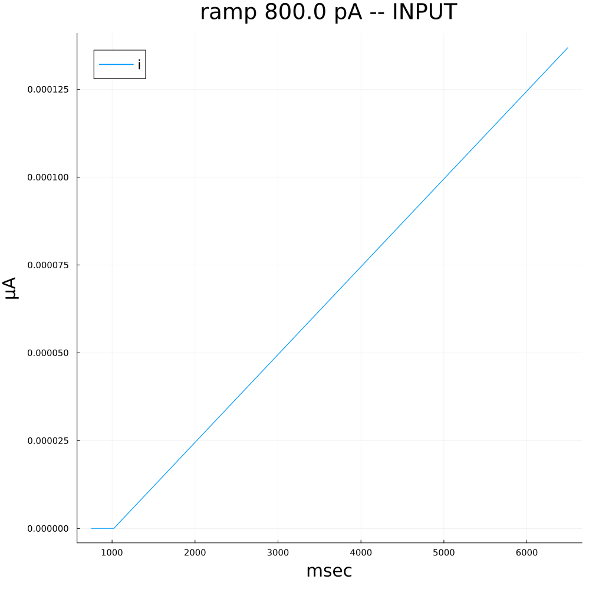
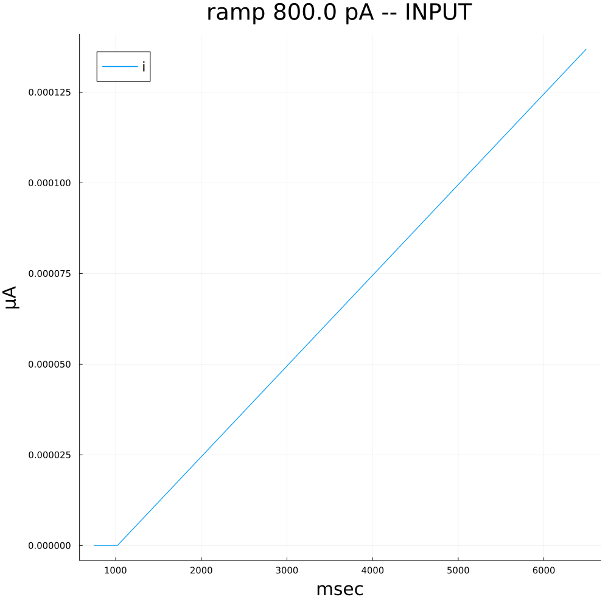

NeuronalModelling.jl
Quantitative Single-Neuron Modelling in Julia
![]()
University of Turin
University of Turin
2024-05-07
Outline
1️⃣ Introduction
2️⃣ Methods
3️⃣ Tools
4️⃣ Results
Resources
 Package: ModellingFramework.jl
Package: ModellingFramework.jl
 Package: NeuronalModelling.jl
Package: NeuronalModelling.jl
 Data: Competition (2007)
Data: Competition (2007)
 Data: Competition (2009)
Data: Competition (2009)
 Data: Allen Brain Atlas (2023)
Data: Allen Brain Atlas (2023)
üé¨ Introduction
- Objectives
- Motivations
Introduction
Objectives
Motivations
Objectives
Theory
Flexible and high-performance computational framework for the specification, calibration and simulation of single-neuron models.
Application
Electrophysiological time series inference and prediction for individual neurons.
Introduction
Objectives
Motivations
Motivations
- Calibrating neuronal models is a long standing issue 1;
- A lot of hand tuning and domain expertise is involved in many articles;
- Currently there is no Julia package that does it fully 2.
Motivations
- An international competition has been proposed 1;
- Best model was heavily hand-tuned 2;
- Little progress the last 10+ years 3.
üìë Methods
- Models
- Calibration
Methods
Models:
2.1 Leaky Integrate and Fire
2.2 Hodgkin-Huxley
2.3 Two Dimensional Reduction
2.4 One Dimensional Reduction
2.5 Exponential NLIF
2.6 AdEx-NLIF
Calibration
Models: Leaky integrate and fire
- Subthreshold dynamics: \[ \tau \frac{du}{dt} = -(u(t) - u_{rest}) + RI(T) \qquad(1)\]
- With firing mechanism:
\[ u(t) \ge \theta \implies u(t+\delta) = u_r \qquad(2)\]
- Cannot describe Bursting, Adaptation, Delayed Response, Inhibitory Rebound etc.
- Cannot describe spike features such as spike height, width at half height, etc…
Models: Hodgkin-Huxley
\[ C\frac{du}{dt} = -\sum\limits_k I_k(t) + I(t) \qquad(3)\]
Where, in the simplest case 1:
\[ \sum\limits_k I_k(t) = g_{Na}m^3h(u - E_{Na}) + g_Kn^4(u-E_K) + g_L(u-E_L) \qquad(4)\]
Where, setting \(x \in \{m,n,h\}\):
\[ \dot{x} = \alpha_x(u)(1-x) - \beta_x(u)x \qquad(5)\]
Where, for instance:
\[ \alpha_m(u) = \frac{0.182(u+35)}{1-e^\frac{u+35}{9}} \; , \; \beta_m(u)= \frac{-0.124(u+35)}{1-e^\frac{u+35}{9}} \qquad(6)\]
Models: Hodgkin-Huxley
Unstable \(\rightarrow\) define1:
\[ x_0(u) := \frac{\alpha_x(u)}{\alpha_x(u) + \beta_x(u)} = \frac{1}{2}\left(1+\tanh\left(\frac{u - u_x}{\kappa_x}\right)\right) \qquad(7)\] \[ \tau_x(u) = \frac{1}{\alpha_x(u) + \beta_x(u)} = \tau^0_x + \tau^{max}_x\left(1-\tanh\left( \frac{u - u_{\tau,x}}{\sigma_x} \right)^2\right) \qquad(8)\]
And then substitute Equation 5 with:
\[ \dot{x} = \frac{x_0(u) - x(u)}{\tau_x(u)} \qquad(9)\]
\(\rightarrow\) solver stability.
Models: two dimensional reduction
Hodgkin-Huxley models are a bit unpractical:
- No voltage nor current thresholds:
- Impossible to visualize and analyze a 4d+ dynamical system;
- Best of both worlds \(\rightarrow\) dimensionality reduction!
Models: two dimensional reduction
Note: dynamics of \(n\) and \(h\) are very slow w.r.t. \(m\)
\(\rightarrow\) define \(:w = b-h = an\)
\(\rightarrow\) set: \(m(u) = m_0(u)\)
So that Equation 3 becomes: \[ \frac{du}{dt} = \frac{1}{\tau}(F(u,w) + RI(t)) \]
And Equation 5 (or Equation 9) reduce to: \[ \frac{dw}{dt} = \frac{1}{\tau_w}G(u,w) \]
Examples: Morris-Lecar model, FitzHugh-Nagumo model
Models: one dimensional reduction
Define \(\epsilon := \frac{\tau}{\tau_w}\). If \(\tau_w \gt \gt \tau\):
Since:
- One may NOT be interested in spike shape;
- The \(w\) variable only varies after the voltage has reached its maximum.
\(\rightarrow\) substitute the equation for \(\frac{dw}{dt}\) with reset mechanism! \(\rightarrow\) NLIF models:
\[ \frac{du}{dt} = \frac{1}{\tau}(F(u,w_{rest}) + RI(t)) =: \frac{1}{\tau}(f(u) + RI(t)) \qquad(10)\] \[ u(t) \ge \theta \implies u(t+\delta) = u_r \qquad(11)\]
Models: Exponential NLIF
How to choose \(f(u)\)?
\[ \frac{f(u(t))}{\tau} = \left<\frac{I(t)}{C} - \frac{du}{dt}\right> \]
\(\rightarrow\) best fitting function is: \(f(u)= -(u-u_{rest}) + \Delta_T e^{\frac{u-\theta_{rh}}{\Delta_T}}\)
Same result from reduced 1d Hodgkin Huxley model.
Models: AdEx-NLIF
A single Equation 10 cannot capture all firing patterns \(\rightarrow\) add abstract linear current:
\[ \tau\frac{du}{dt} =f(u) -R\sum\limits_k w_k + RI(t) \; , \; \{\tau_k\frac{dw_k}{dt} = a_k(u-u_{rest}) -w_k +b_k\tau_k\sum\limits_{t^{(f)}}\delta(t-t^{(f)})\} \] \[ u(t) \ge \theta \implies u(t+\delta) = u_r \]
Methods
Model Specification
Model Calibration:
3.1 Intro
3.2 Objective Functions
3.3 Feature selection
3.4 MOO
3.5 BORG-MOEA
3.6 Pareto-optimal front
Calibration: Intro
- Model calibration find a parameter set \(\vec{w}\) that makes the model match experimental trace;
- The notion of “matching” will be made precise by the definition of objective functions (loss);
- Calibration methods will need to take into account the intrinsic stochasticity of neurons.
Calibration: Objective Functions
Possible candidates are Trace-to-trace (direct) comparisons:
- L2 loss;
- Phase plane trajectory distance 1;
- …
These usually 2 perform poorly, since:
- Sub- and supra-threshold dynamics are unbalanced;
- Small shifts between simulated and measured spikes usually yield large L2 errors.
- Intrinsic stochasticity makes the selection of the experimental repetition \(r \in R\) to match arbitrary;
Calibration: Objective Functions
\(\rightarrow\) use Feature-based distance functions 1:
- Firing frequency;
- Spike height;
- Latency;
- Accomodation index;
- Coincidence factor;
- Slope of the fit of the spike peaks;
- …
Calibration: Objective Functions
They avoid the previous issues, because
- They are not point-wise, thus insensitive to regime imbalances;
- They directly make the model reproduce qualitative features of the target neuron;
- They take into account Intrinsic stochasticity:
By defining the loss relative to feature \(f\) w.r.t. repetition set \(R\) : \[L_f(\vec{w}, R) = \frac{|\bar{f}_R - f(s(\vec{w}))|}{\sigma^f_R}\]
- We say that we have a good fit when every objective is under 2 SD 1.
Calibration: Feature selection
Experiments 1 suggest the following associations:
Square inputs:
- Firing frequency;
- Latency;
- Accomodation index;
- Width of AP at half height (only for HH models);
- Average height of AP;
- Slow throughs;
Ramp inputs:
- Average height of AP;
- Slow throughs;
- Slope of the fit of the spike peaks;
Colored noisy inputs:
- Coincidence factor;
- Control-adjusted RMS 2.
Calibration: MOO
How to combine the different features?
Weighted sum? No:
- Choice of weights is not obvious;
- No guarantee on the nature and quality of the compromise;
\(\rightarrow\) Multi-Objective Optimization !
Calibration: MOO
Def. Given the objectives \(\{L_{f_1}, L_{f_2}, ..., L_{f_n}\}\), a set of repetitions \(R\) and two parameter sets \(\vec{w_1}\) and \(\vec{w_2}\) we say that \(\vec{w_1}\) dominates \(\vec{w_2}\) \(\iff\):
- \(L_{f_i}(\vec{w_1},R) \leq L_{f_i}(\vec{w_2},R) \qquad \forall i= 1,...,n\)
- \(\exists \bar{i} \in \{1,..,n\} | L_{f_\bar{i}}(\vec{w_1},R) \lt L_{f_\bar{i}}(\vec{w_2},R)\)
MOO purpose: find the set of all \(\vec{w}\) that do not dominate each other.
Such set is the Pareto-optimal front (POF).
Calibration: BORG-MOEA
- Calibration algorithm: BORG-MOEA;
- It is an evolutionary algorithm with self-tuning capabilities;
- Pitting it against other algorithms determined its advantage.
Calibration: Pareto-optimal front #1
- The purpose of a MOEA is to approximate the POF by finding some of its elements;
- Projection of the POF set may assume two configurations:
- First configuration \(\rightarrow\) the two objectives do not conflict each other;
- Second configuration \(\rightarrow\) the two objectives do conflict each other;
Calibration: Pareto-optimal front #2
- Calibration algorithms work better the less objectives they have;
- \(\rightarrow\) one may think to sum together features repeated across stimuli;
- Only possible if the two features are NOT in a tradeoff 1
Calibration: Pareto-optimal front #3
- Configuration of the projections of the POF are not known a priori \(\rightarrow\) features must be kept separate;
- To anyway reduce the number of features, one may resort to objectives combinations 1;
- They consists in substituting two features with the maximum or other combinations of the two.
üíª NeuronalModeling.jl
- Why Julia?
- Overview
- Demonstration
- Future developments
NeuronalModelling.jl
Why Julia?
1.1 Performance;
1.2 Metaprogramming;
1.3 Simple Workflow;
1.4 SciML.
Overview
Demonstration
Future developments
Why Julia?
Why Julia?: Performance
Julia writes like Python but executes as fast as C…
…assuming you know how to use it.1
Why Julia?: Performance
One function \(\rightarrow\) several methods:
[1] +(x::T, y::T) where T<:Union{Int128, Int16, Int32, Int64, Int8, UInt128, UInt16, UInt32, UInt64, UInt8} in Base at int.jl:87
[2] +(x::T, y::T) where T<:Union{Float16, Float32, Float64} in Base at float.jl:383
[3] +(c::Union{UInt16, UInt32, UInt8}, x::BigInt) in Base.GMP at gmp.jl:531 Method selection:
(Arguments’) Type Inference;
Method lookup.
Why Julia?: Performance
Type Inference:
julia> @code_warntype(loss_square110pA(Vector{Float64}(initial_parameters_values_AdEx[2:end])))
MethodInstance for (::RuntimeGeneratedFunctions.RuntimeGeneratedFunction{(:theta,), NeuronalModeling.var"#_RGF_ModTag", NeuronalModeling.var"#_RGF_ModTag", (0xb92b619f, 0x78b8fd2f, 0xcb257d79, 0xdca519fc, 0xc02e6bbc), Expr})(::Vector{Float64})
from (f::RuntimeGeneratedFunctions.RuntimeGeneratedFunction)(args::Vararg{Any, N}) where N @ RuntimeGeneratedFunctions C:\Users\claud\.julia\packages\RuntimeGeneratedFunctions\mfDmv\src\RuntimeGeneratedFunctions.jl:125
Static Parameters
N = 1
Arguments
f::RuntimeGeneratedFunctions.RuntimeGeneratedFunction{(:theta,), NeuronalModeling.var"#_RGF_ModTag", NeuronalModeling.var"#_RGF_ModTag", (0xb92b619f, 0x78b8fd2f, 0xcb257d79, 0xdca519fc, 0xc02e6bbc), Expr}
args::Tuple{Vector{Float64}}
Body::NTuple{7, Float64}
1 ─ %1 = RuntimeGeneratedFunctions.generated_callfunc::Core.Const(RuntimeGeneratedFunctions.generated_callfunc)
│ %2 = Core.tuple(f)::Tuple{RuntimeGeneratedFunctions.RuntimeGeneratedFunction{(:theta,), NeuronalModeling.var"#_RGF_ModTag", NeuronalModeling.var"#_RGF_ModTag", (0xb92b619f, 0x78b8fd2f, 0xcb257d79, 0xdca519fc, 0xc02e6bbc), Expr}}
│ %3 = Core._apply_iterate(Base.iterate, %1, %2, args)::NTuple{7, Float64}
└── return %3(Successful) Type Inference \(\rightarrow\) Method Lookup at compile time
Why Julia?: Metaprogramming
Example from the manual:
for op = (:sin, :cos, :tan, :log, :exp)
eval(quote
Base.$op(a::MyNumber) = MyNumber($op(a.x))
end)
endExample from NeuronalModeling.jl:
function borg_moea_loss_closure(hh_model::H,
# More arguments...
)
# Code to distinguish feature aggregation...
# We need to generate the loss at runtime since, ar compile time, `num_features`is not known causing it to be not type-stable
loss_expr = :(
function borg_moea_loss(theta::Vector{Float64})::NTuple{$num_features,Float64}
losses_values_by_feature_dict = hh_neuron_loss_intermediate($hh_model, theta, $fixed_parameters_indexes, $variable_parameters_indexes, deepcopy($fixed_parameters_values), $save_idxs, $filter, $resting_potentials_values_by_type_amplitude, $features_targets_lossKwargs_by_type_amplitude, $opt_trim_associations, $fast_problems_by_type_amplitude_dict, $time_steps_by_type_amplitude_dict, $tstops_by_type_amplitude_dict, $features_counts_dict, $electrophysiology_backend, $aggregation_strategy_of_same_feature_across_different_type_amplitudes)
return NTuple{$num_features,Float64}([loss_val <= 1000.0 ? loss_val : 1000.0 for loss_val in values(losses_values_by_feature_dict)]) # length(losses_values_by_feature_dict)
end
)
return @RuntimeGeneratedFunction(loss_expr)
endWhy Julia?: Simple Workflow
It is easy to contribute a package to the Julia’s ecosystem:
generatethe package’s structure via PkgTemplates.jl;
- Write the code;
- Publish the repository on GitHub;
- Invoke
@JuliaRegistrator registerin an issue.
Why Julia? SciML
It is an ecosystem featuring:
NeuronalModelling.jl
Why Julia?
Overview:
2.1 Model specification;
2.2 Data;
2.3 Features;
2.4 Associations;
2.5 Calibration Pattern;
Demonstration
Future developments
Overview: Model Specification #1
Nonlinear integrate-and-fire models are specified via the IFModel struct1:
Overview: Model Specification #2
Example (AdEx):
# AdEx parameters names. "Dead time" missing due to issue in DifferentialEquations.jl (see links below)
const parameters_names_AdEx = ["spike_times", "V_th", "u_r", "b", "C", "g_L", "u_rest", "Δ_T", "θ_rh", "a", "τ_w"]
# Initial parameters values for the AdEx model
const initial_parameters_values_AdEx_dict = OrderedDict("spike_times" => Float64[],
"V_th" => -60.0, # V_th (mV)
"u_r" => -71.0 , # u_r (mV)
"b" => 60e-6, # b (μA)
"C" => (1 / ( 20e-3 * 500e6) )*1e4, # C = 1/ (τ_m * R) (μF)
"g_L" => (1/(500e6)) * 1e3, # g_L = 1/R (mS)
"u_rest" => -70.0 , # u_rest (mV)
"Δ_T" => 2.0, # Δ_T (mV)
"θ_rh" => -65.0, # θ_rh (mV)
"a" => 0.0 * 1e-6, # a (mS)
"τ_w" => 30.0) # τ_w (msec) taken from table 6.1 https://neuronaldynamics.epfl.ch/online/Ch6.S2.html , tonic
# Function that computes the initial conditions for the AdEx model given the parameters values (cfr Future developments: Hodgkin-Huxley model)
get_AdEx_IC(V_rest::Float64, all_parameters_values::Vector{<:Any}) = [V_rest, 0.0]
# Deterministic dynamics for the AdEx. Implementation features have been chosen via benchmarking multiple approaches
function AdEx_deterministic_dynamic!(input::F) where {F <: Function}
function parametrized_AdEx_deterministic_dynamic!(du, u, p, t)
spike_times, V_th, u_r, b, C, g_L, u_rest, Δ_T, θ_rh, a, τ_w = p
# # State variables
V = @view u[1]
w = @view u[2]
# State variables
dV = @view du[1]
dw = @view du[2]
dV .= (1 ./C) .* ( (-1) .* g_L .* (V .- u_rest) .+ g_L .* Δ_T .* exp((V .- θ_rh) ./ Δ_T) .- w .+ input(t))
dw .= (1 ./ τ_w) .* (a .* (V .- u_rest) .- w)
end
end
# Firing mechanism
function AdEx_firing_callback_discrete_condition(u,t,integrator)
u[1] >= integrator.p[2]
end
function AdEx_firing_callback_affect!(integrator)
push!(integrator.p[1], integrator.t)
integrator.u[1] = integrator.p[3]
integrator.u[2] += integrator.p[4]
end
const AdEx_firing_discrete_callback = DifferentialEquations.DiscreteCallback(AdEx_firing_callback_discrete_condition, AdEx_firing_callback_affect!, save_positions = (false,false))Overview: Model Specification #3
So that the model can be instantiated as:
# Parameters' priors are defined as Uniform distribution around the values provided in `initial_parameters_values_AdEx_dict`
parameters_priors_AdEx = get_uniform_priors(initial_parameters_values_AdEx, range = 1 )
# Define calibratable and non-calibratable parameters
parameters = [name != "spike_times" ? Parameter(name, val, prior,true) : Parameter(name, val, prior,false) for (name, val, prior) in zip(parameters_names_AdEx, initial_parameters_values_AdEx, parameters_priors_AdEx)]
# Outer constructor
AdEx = IFModel( "Adaptive Exponential",
AdEx_deterministic_dynamic!,
get_AdEx_IC,
parameters,
AdEx_firing_discrete_callback
); Overview: Data #1
- Data were taken from the Allen Brain Atlas;
- Data: voltage recordings of cell responses to input currents (square, multiple square, impulse, ramp, white noise, etc);
- We selected one cell in particular because of its characteristics;
Overview: Data #2
AllenSDK provides automated download and caching of the data from Allen Brain Atlas.
API for importing data from Allen website:
Dict{String, Dict{String, Type_Amplitude}} with 8 entries:
"ramp" => Dict("800.0 pA"=>Type_Amplitude…
"square - 2s suprathreshold" => Dict("190.0 pA"=>Type_Amplitude…
"test" => Dict("0.0 pA"=>Type_Amplitude…
"long square" => Dict("-110.0 pA"=>Type_Amplitude…
"square - 0.5ms subthreshold" => Dict("-200.0 pA"=>Type_Amplitude…
"noise 2" => Dict("259.375 pA"=>Type_Amplitude…
"short square" => Dict("800.0 pA"=>Type_Amplitude…
"noise 1" => Dict("255.0 pA"=>Type_Amplitude…Overview: Data #3
Each input type and amplitude has usually been repeated more than once. We collect the corresponding sweeps in a dedicated Type_Amplitude struct:
struct Type_Amplitude <: AbstractMeasurement
type::String
amplitude::String
sweeps::Tuple{Vararg{Sweep}}
interpolated_input_closure::Function
endExample:
Type_Amplitude
┌────────────────────────────┬───────────┬──────────────────┬────────────────────────────────────────────┐
│ TYPE │ AMPLITUDE │ NUMBER OF SWEEPS │ NAME OF INPUT INTERPOLATION │
├────────────────────────────┼───────────┼──────────────────┼────────────────────────────────────────────┤
│ square - 2s suprathreshold │ 110.0 pA │ 4 │ square__2s_suprathreshold_110_0_pA_closure │
└────────────────────────────┴───────────┴──────────────────┴────────────────────────────────────────────┘Overview: Data #4
Every repetition of the same input is called Sweep. Thus, Sweeps contain the raw data, i.e. the time series of input current and voltage response:
struct Sweep{T}
name::String
v::Vector{T}
i::Vector{Float64}
t::Vector{Float64}
index_range::Tuple{Int64,Int64}
UOM::NamedTuple{(:v, :i, :t),Tuple{Float64,Float64,Float64}}
extra_data::NamedTuple{<:Any,<:Tuple{Vararg{Any}}}
endExample:
SWEEP Square__2s_Suprathreshold_110_0_pA
┌───────────────────────┬────────────────────────────────────┐
│ PROPERTY │ VALUE │
├───────────────────────┼────────────────────────────────────┤
│ index_range │ (150000, 2004000) │
├───────────────────────┼────────────────────────────────────┤
│ Units of Measure (SI) │ (v = 0.001, i = 1.0e-6, t = 0.001) │
└───────────────────────┴────────────────────────────────────┘Overview: Data #4
We may visualize the sweeps corresponding to different input currents:
 

Overview: Features #1
Features are implemented via the ElectrophysiologicalFeature construct:
mutable struct ElectrophysiologicalFeature <: AbstractElectrophysiologicalFeature
name::String
UOM::Float64
target_evaluation_on_sweep::Function
target_lossKwargs_evaluationKwargs_evaluation_on_typeAmplitude::Function
loss::Function
loss_kwargs::NamedTuple{<:Any, <:Tuple{Vararg{Any}}}
target_lossKwargs_evaluation_kwargs::NamedTuple{<:Any, <:Tuple{Vararg{Any}}}
endOverview: Features #2
Example of Sweep level feature, the Firing Frequency:
# Evaluation on NLIF model simulation
allen_firing_frequency_Hz_evaluation_on_sweep(sol::OrdinaryDiffEq.ODESolution) = length(sol.prob.p[1]) / (diff(vcat(sol.prob.tspan...))[1] * 1e-3)
# Evaluation on electrophysiological recordings
allen_firing_frequency_Hz_evaluation_on_sweep(ephys_sfe::PyObject) = ephys_sfe.sweep_feature("avg_rate")
# Target and loss kwargs evaluation
function allen_firing_frequency_Hz_target_lossKwargs_evaluationKwargs_evaluation_on_typeAmplitude(ephys_sfes::Vector{PyObject})
# Evaluate firing frequency for all electrophysiological recordings
sweep_features = allen_firing_frequency_Hz_evaluation_on_sweep.(ephys_sfes)
# As per the literature, the target is the mean of the sweep-level features
target = mean(sweep_features)
# As per the literature, the loss must be normalized by the experimental standard deviation
experimental_standard_deviation = (Statistics.std(sweep_features))
# If the experimental std is lesser than a certain threshold (e.g. only one sweep is available), then use an empirical value stored elsewhere
standard_deviation = isnan(experimental_standard_deviation) || experimental_standard_deviation < allen_default_standard_deviations["firing_frequency_Hz"] ? allen_default_standard_deviations["firing_frequency_Hz"] : experimental_standard_deviation
return target, (standard_deviation = standard_deviation,), ()
end
# Define the feature
allen_firing_frequency_Hz() = ElectrophysiologicalFeature(
"allen_firing_frequency_Hz",
1e0,
allen_firing_frequency_Hz_evaluation_on_sweep,
allen_firing_frequency_Hz_target_lossKwargs_evaluationKwargs_evaluation_on_typeAmplitude,
druckmann_loss;
)Overview: Features #3
Example of Type_Amplitude level feature, the Coincidence Factor:
# Evaluate the coincidence factor between two sweeps (NB: the coincidence factor does not commute w.r.t. the order of the two sweeps)
function coincidence_factor_closure(δ::Int64)
function coincidence_factor(experimental_peaks_t::Vector{Float64}, model_peaks_t::Vector{Float64} )
interval = experimental_peaks_t[end] - experimental_peaks_t[1] + 2*δ
# number of spiked of experimental trace
N_d::Int64 = length(experimental_peaks_t)
# number of spikes of model
N_m::Int64 = length(model_peaks_t)
# spike frequency model (in 1/ms, since it is multiplied by Δ ( = 4ms by default) in the return )
f_m::Float64 = N_m / interval
# Count coincidences
N_c::Int64 = 0
# details here: https://citeseerx.ist.psu.edu/document?repid=rep1&type=pdf&doi=675036bde791910851c7bf581ed7220e8f55ac53
if !isempty(model_peaks_t)
experimental_peaks_t_dc = deepcopy(experimental_peaks_t)
for sol_t in model_peaks_t
differences = abs.(experimental_peaks_t_dc .- sol_t)
min_index = argmin(differences)
if differences[min_index] <= δ
deleteat!(experimental_peaks_t_dc, min_index)
N_c += 1
if isempty(experimental_peaks_t_dc)
break
end
end
end
end
return ( (N_c - 2 * f_m * N_d * δ ) / (N_d + N_m) ) * ( 2 / ( 1 - 2 * f_m * δ ))
end
end
# coincidence_factor. used to implement Xu2019: https://ieeexplore.ieee.org/document/8682825
function coincidence_factor_loss_closure(δ::Int64)
coincidence_factor = coincidence_factor_closure(δ)
function coincidence_factor_loss(solution_peaks_t::Vector{Float64}, experimental_peaks_ts::Vector{Vector{Float64}}; intrinsic_reliability::Float64 ) # interval::Float64
# Mean the coincidence factors between the simulation and all the sweeps
coincidence = mean([coincidence_factor(experimental_peaks_t, solution_peaks_t) for experimental_peaks_t in experimental_peaks_ts])
# return 1 - the coincidence factor, so it is coherent with minimization (rather than maximization). Recall that the coincidence factor is at most 1. Negative values indicate that the simulated sweep reproduces spike times more consistently than the physical neuron intrinsic reliability, thus we may confidently return 0.
return maximum([1.0 - coincidence / intrinsic_reliability, 0.0])
end
end
# Evaluation on electrophysiological recordings
coincidence_factor_evaluation_on_sweep(ephys_sfe::PyObject) = ephys_sfe.spike_feature("peak_t") .* 1e3
# Evaluation on model simulation
coincidence_factor_evaluation_on_sweep(sol::OrdinaryDiffEq.ODESolution) = sol.prob.p[1]
# Evaluate target and intrinsic variability
function coincidence_factor_target_lossKwargs_evaluationKwargs_evaluation_on_typeAmplitude_closure(δ::Int64)
coincidence_factor = coincidence_factor_closure(δ)
function coincidence_factor_target_lossKwargs_evaluationKwargs_evaluation_on_typeAmplitude(ephys_sfes::Vector{PyObject})
experimental_peaks_ts = coincidence_factor_evaluation_on_sweep.(ephys_sfes)
experimental_coincidence_factors = [coincidence_factor(experimental_spike_times_1, experimental_spike_times_2) for (experimental_spike_times_1,experimental_spike_times_2) in Iterators.product(experimental_peaks_ts,experimental_peaks_ts)]
intrinsic_reliability = mean(experimental_coincidence_factors)
return experimental_peaks_ts, (intrinsic_reliability = intrinsic_reliability,), ()
end
end
# Instantiate the features which depends on the interval δ (msec)
coincidence_factor_msec(δ::Int64 = 2) = ElectrophysiologicalFeature(
"coincidence_factor_msec",
1e-3,
coincidence_factor_evaluation_on_sweep,
coincidence_factor_target_lossKwargs_evaluationKwargs_evaluation_on_typeAmplitude_closure(δ), #ephys_sfe::PyObject -> ephys_sfe.spike_feature("peak_t") .* 1e3,
coincidence_factor_loss_closure(δ),
)Overview: Features #4
Other implemented features are:
Well established:
- allen_action_potential_peak_mV;
- allen_fast_trough_depth_mV;
- allen_slow_troughs_depth_mV;
- allen_time_of_slow_troughs_fraction;
- allen_AP_width_hh_msec;
- allen_resting_potential_mV;
- allen_latency_to_first_spike_msec;
- allen_duration_of_first_isi_msec;
- allen_isi_cv;
- allen_adaptation_index;
- allen_average_isi_msec;
- allen_last_spike_latency_msec;
- slope_after_stim_mV_msec;
- custom_ISI_log_slope_msec;
- spike_height_slope_mV;
- slow_troughs_slope_mV;
Experimental:
- phase_plane_trajectory;
- phase_plane_trajectory_druck;
- custom_voltage_base_mV_druck;
- custom_voltage_base_mV_l2;
- custom_voltage_base_mV_mean;
- custom_voltage_after_stim_mV_druck;
- custom_voltage_after_stim_mV_l2;
- custom_voltage_after_stim_mV_mean;
- custom_steady_state_voltage_stimend_mV_druck;
- custom_steady_state_voltage_stimend_mV_l2;
- custom_steady_state_voltage_stimend_mV_mean;
Overview: Associations #1
- Different
Type_Amplitudes may be calibrated w.r.t. differentFeatures;
- E.g. it would make sense to calibrate the slope of the slow throughs w.r.t a ramp input, less so for a square input where such coefficient should be 0;
- Thus, the
Associationstruct has been implemented to perform such assignments:
Overview: Associations #2
Example Associations:
const cell_dataset = get_cell_dataset(manifest_path,488697163)
# Square
const square_110pA = cell_dataset["data"]["square - 2s suprathreshold"]["110.0 pA"];
const square_features = (allen_firing_frequency_Hz(),allen_resting_potential_mV(), allen_latency_to_first_spike_msec(),allen_last_spike_latency_msec(),allen_average_isi_msec(), allen_slow_troughs_depth_mV(), coincidence_factor_msec(2))
const square_110_allen_association = Association("square_110_allen_association",square_110pA, square_features)
# Ramp
const ramp_800pA = get_type_amplitude(cell_dataset, "ramp", "800.0 pA")
const ramp_features = (allen_firing_frequency_Hz(),allen_resting_potential_mV(), allen_latency_to_first_spike_msec(),allen_last_spike_latency_msec(),allen_average_isi_msec(), allen_slow_troughs_depth_mV(), coincidence_factor_msec(2), slow_troughs_slope_mV())
const ramp_800_allen_association = Association("ramp_800_allen_association",ramp_800pA, ramp_features)Overview: Calibration Pattern #1
- The model has
Parameters andInitial_Conditions. Since either of them may be tuned, they both subtypeCalibratable:
mutable struct Parameter{T,P} <: AbstractParameter{T,P}
name::String
value::T
prior::P
calibratable::Bool
endmutable struct Initial_Condition{T,P} <: AbstractInitialCondition{T,P}
name::String
value::T
prior::P
calibratable::Bool
end- All model
Parameters andInitial_Conditions form aConfiguration:
Overview: Calibration Pattern #2
- The optimization algorithm and/or method and calibration metadata are specified in the
Stepstruct fromModelingFramework.jl:
mutable struct Step <: AbstractStep
name::String # The name of the step. It is used as a key in the Calibration_History of the model
method::Function # The step method. It must have signature (data::D, Model::M; kwargs...) where {D <: Tuple{Vararg{<:AbstractData}}, M <: AbstractModel}, and must return a valid Configuration.
kwargs # Step kwargs. It is a NamedTuple containing all extra named arguments to be passed to Step.method
endParameters andInitial_Conditions’ priors are allowed to change betweenPhases, which also serve as collection ofSteps. For neuronal models, usually just onePhaseis enough:
mutable struct Phase{S <: Tuple{Vararg{<:AbstractStep}}, D <: Union{Nothing,Tuple{Vararg{<:AbstractData}}} } <: AbstractPhase
name::String
steps::S
priors::Vector{<:Union{<: Nothing, <: Distribution{Univariate, Continuous}, <: BallTreeDensity} }
start::Union{Nothing,Float64}
finish::Union{Nothing,Float64}
time_scale::Union{Nothing,Float64}
data::D # For multiphase calibration
endOverview: Calibration Pattern #3
An example of a Step’s method that uses the BORG-MOEA algorithm to perform multi-objective evolutionary calibration:
function bbo_borgmoea_method(associations::Tuple{Vararg{Association}},
model::M;
variable_parameters_names::Vector{String},
save_idxs::Vector{Int64},
modelingtoolkit::Bool = true,
cell_dataset_optimization::Cell_Dataset_Optimization = Cell_Dataset_Optimization( trimming = false, mode = nothing), plot_optimized_sweeps::Bool = false,
maxtime = 1,
populationsize = 10* length(unique(combine_objectives_names(associations))),
verbose::Bool = false ) where {M<: Union{HH_model, IFModel}}
# Group parameters into variable and fixed sets
all_parameters_names = get_last_parameters_names(model.calibration_history)
variable_parameters = select_calibratables(get_last_parameters(model.calibration_history),variable_parameters_names)
variable_parameters_indexes = [findfirst(all_sym -> all_sym == var_sym, all_parameters_names ) for var_sym in variable_parameters_names ]
fixed_parameters_indexes = setdiff(collect(1:length(all_parameters_names)), variable_parameters_indexes )
fixed_parameters_values= get_calibratables_values( select_calibratables(get_last_parameters(model.calibration_history),setdiff(all_parameters_names,variable_parameters_names)) )
variable_parameters_bounds::Vector{Tuple{Float64, Float64}} = [get_bounds_from_prior(prior, (0.0,1.0)) for prior in get_calibratables_priors(variable_parameters)]
# Instantiate the loss. Note that in the "borg_moea" case, it is generated run time in order fo it to be type-stable;
# `modelingtoolkit` controls symbolic rewriting of the deterministic_dynamics of the model to improve performance;
# `cell_dataset_optimization` controls sweep truncation (and other deprecated behaviors) to improve performance;
loss_neuro = neuron_optim_loss_closure(model, associations, variable_parameters_names, save_idxs, "borg_moea"; modelingtoolkit = modelingtoolkit, cell_dataset_optimization = cell_dataset_optimization, plot_optimized_sweeps = plot_optimized_sweeps, verbose = verbose)
# Launch multi-threaded calibration. The BORG-MOEA algorithm will auto-tune its hyperparameters, making it a suitable choice for black-box optimization
dimensions = length(unique(combine_objectives_names(associations)))
res = bboptimize( loss_neuro; Method=:borg_moea, FitnessScheme=ParetoFitnessScheme{dimensions}(is_minimizing=true), SearchRange=variable_parameters_bounds, ϵ=0.05, TraceInterval=1.0, TraceMode=:verbose, MaxTime = maxtime, PopulationSize = populationsize, NThreads=Threads.nthreads()-1 );
# Construct and return new Configuration
all_calibrated_parameters_values = [couple[2] for couple in sort(collect(zip(vcat(fixed_parameters_indexes, variable_parameters_indexes), vcat(fixed_parameters_values, best_candidate(res)))); by=first)]
all_calibrated_parameters = change_values(get_last_parameters(model.calibration_history),all_calibrated_parameters_values)
previous_model_posterior = get_last_model_posterior(model.calibration_history)
new_model_posterior = Model_Posterior([Ordered_Multivariate(point_distribution(par.value), [par.name] ) for par in all_calibrated_parameters if par.calibratable ], previous_model_posterior.initial_conditions_size, previous_model_posterior.parameters_size )
new_configuration = Configuration(get_last_initial_conditions(model.calibration_history),all_calibrated_parameters, new_model_posterior)
return ((res = res,), new_configuration)
endOverview: Calibration Pattern #4
- So the main
Stepwill be constructed as:
- We furthermore define some simpler
Steps that will set a few parameters as they can be measured directly from the electrophysiological recordings:
fix_urest_step = Step("fix_urest_step", fix_calibratable_method, (variable_parameter_name = "u_rest", feature = allen_resting_potential_mV()))
fix_V_th_step = Step("fix_V_th_step", fix_calibratable_method, (variable_parameter_name = "V_th", feature = allen_action_potential_peak_mV()))
fix_u_r_step = Step("fix_u_r_step", fix_calibratable_method, (variable_parameter_name = "u_r", feature = allen_fast_trough_depth_mV()))Overview: Calibration Pattern #5
A Step_Record object si created every time a calibration Step is completed:
struct Step_Record{T <: Union{Nothing,AbstractStep} } <: AbstractStepRecord
step::T
configuration::Configuration
extras::NamedTuple
end
# The `configuration` field contains the new model Configuration after the `step` has been performed.Step_Records are then collected in Phase_Records (usually neuronal models only have one phase and thus one Phase_Record):
NeuronalModelling.jl
Why Julia?
Overview;
Demonstration:
3.1 First Example;
3.2 Second Example.
Future developments;
Demonstration: First Example #1
A complete example where we calibrate on square_110pA (for around 15 minutes) and test on square_150pA:
using NeuronalModeling
const manifest_path = "path/to/allensdk/manifest"
const initial_parameters_values_AdEx = collect(values(NeuronalModeling.initial_parameters_values_AdEx_dict))
const parameters_priors_AdEx = get_uniform_priors(initial_parameters_values_AdEx, range = 1 )
const cell_dataset = get_cell_dataset(manifest_path,488697163)
# Plot Sweeps and Input corresponding to a Type_Amplitude
p_sweeps_square, p_input_square = plot_type_amplitude(cell_dataset["data"]["square - 2s suprathreshold"]["110.0 pA"]);
# AdEx model
AdEx = IFModel( "Adaptive Exponential",
NeuronalModeling.AdEx_deterministic_dynamic!,
NeuronalModeling.get_AdEx_IC,
[name != "spike_times" ? Parameter(name, val, prior,true) : Parameter(name, val, prior,false) for (name, val, prior) in zip(NeuronalModeling.parameters_names_AdEx, initial_parameters_values_AdEx, parameters_priors_AdEx)],
NeuronalModeling.AdEx_firing_discrete_callback
);
# Type_Amplitudes
const square_110pA = cell_dataset["data"]["square - 2s suprathreshold"]["110.0 pA"];
const square_150pA = cell_dataset["data"]["square - 2s suprathreshold"]["150.0 pA"];
# Features
const square_simple_features = (allen_firing_frequency_Hz(),allen_resting_potential_mV(), allen_latency_to_first_spike_msec(),allen_last_spike_latency_msec(),allen_average_isi_msec(), allen_slow_troughs_depth_mV(), coincidence_factor_msec(2))
# Associations
const square_110_allen_association = Association("square_110_allen_association",square_110pA, square_simple_features)
# Define which parameters are fixed and which are variable
const variable_parameters_names = [par_name for par_name in NeuronalModeling.parameters_names_AdEx if par_name ∉ ["spike_times", "u_rest", "V_th", "u_r"] ]
const all_variable_parameters_names = [par_name for par_name in NeuronalModeling.parameters_names_AdEx if par_name ∉ ["spike_times"] ]
# Define multi-objective evolutionary step
const cell_dataset_optimization = Cell_Dataset_Optimization( true, nothing, excluded_features = ("custom_voltage_base_mV_druck","custom_voltage_base_mV_l2","custom_steady_state_voltage_stimend_mV_druck", "custom_steady_state_voltage_stimend_mV_l2", "custom_voltage_after_stim_mV_druck", "custom_voltage_after_stim_mV_l2", "spike_times_msec"))
bbo_borgmoea_step = Step( "bbo_borgmoea_step",
bbo_borgmoea_method,
(variable_parameters_names = variable_parameters_names, save_idxs = [1], modelingtoolkit = true, cell_dataset_optimization = cell_dataset_optimization, maxtime = 15*60, plot_optimized_sweeps = false, verbose = true ) )
# Define Steps that perform manual parameter identification
fix_urest_step = Step("fix_urest_step", fix_calibratable_method, (variable_parameter_name = "u_rest", feature = allen_resting_potential_mV()))
fix_V_th_step = Step("fix_V_th_step", fix_calibratable_method, (variable_parameter_name = "V_th", feature = allen_action_potential_peak_mV()))
fix_u_r_step = Step("fix_u_r_step", fix_calibratable_method, (variable_parameter_name = "u_r", feature = allen_fast_trough_depth_mV()))
# Perform the calibration
multi_step_calibration!((square_110_allen_association,), AdEx, (fix_urest_step, fix_V_th_step, fix_u_r_step, bbo_borgmoea_step))
# Plot results on training set
plot_integrate_and_fire_calibration(AdEx, Vector{Float64}(get_last_parameters_values(AdEx.calibration_history)[2:end]), square_110pA)
# Plot results on test set
plot_integrate_and_fire_calibration(AdEx, Vector{Float64}(get_last_parameters_values(AdEx.calibration_history)[2:end]), square_150pA)Demonstration: First Example #2
Losses (in natural units) on train set before calibration:
loss_square110pA = neuron_optim_loss_closure(AdEx, (square_110_allen_association,), all_variable_parameters_names, [1], "borg_moea"; modelingtoolkit = true, cell_dataset_optimization = cell_dataset_optimization, plot_optimized_sweeps = false, verbose = true);
loss_square110pA(Vector{Float64}(initial_parameters_values_AdEx[2:end]))"allen_latency_to_first_spike_msec" => 28.16
"allen_slow_troughs_depth_mV" => 1.55801
"coincidence_factor_msec" => 1.03656
"allen_last_spike_latency_msec" => 0.536872
"allen_average_isi_msec" => 4.06293
"allen_resting_potential_mV" => 2.78894
"allen_firing_frequency_Hz" => 1.1811Losses (in natural units) on train set after calibration (analogous input code):
"allen_latency_to_first_spike_msec" => 1.00498
"allen_slow_troughs_depth_mV" => 1.39227
"coincidence_factor_msec" => 0.874528
"allen_last_spike_latency_msec" => 0.59422
"allen_average_isi_msec" => 0.798626
"allen_resting_potential_mV" => 0.0140288
"allen_firing_frequency_Hz" => 0.393699So the aggregated loss in around 5, which far less than what Druckmann deems acceptable.
Demonstration: First Example #3
Model simulation before calibration superimposed to square_110pA sweeps:
Demonstration: First Example #4
Model simulation after calibration superimposed to square_110pA sweeps:
Demonstration: First Example #5
Losses on test (square_150pA) after calibration:
"allen_latency_to_first_spike_msec" => 4.24117
"allen_slow_troughs_depth_mV" => 0.160079
"coincidence_factor_msec" => 1.076
"allen_last_spike_latency_msec" => 1.72127
"allen_average_isi_msec" => 15.2966
"allen_resting_potential_mV" => 0.110215
"allen_firing_frequency_Hz" => 8.66138Which, if aggregated, returns around \(31\), that is greater than \(2 \times \text{num_features} = 2 \times 7 = 14\).
\(\rightarrow\) We may improve this result by training on a wider dynamic range that extends below and above the square_150pA. For example, we could train on square_110pA and on square_190pA.
Demonstration: Second Example #1
A complete example where we calibrate over square_110pA and square_190pA (for around 1 hour), test over square_150pA:
using NeuronalModeling
const manifest_path = "path/to/allensdk/manifest"
const initial_parameters_values_AdEx = collect(values(NeuronalModeling.initial_parameters_values_AdEx_dict))
const parameters_priors_AdEx = get_uniform_priors(initial_parameters_values_AdEx, range = 1 )
const cell_dataset = get_cell_dataset(manifest_path,488697163)
# Plot Sweeps and Input corresponding to a Type_Amplitude
p_sweeps_square, p_input_square = plot_type_amplitude(cell_dataset["data"]["square - 2s suprathreshold"]["110.0 pA"]);
# AdEx model
AdEx = IFModel( "Adaptive Exponential",
NeuronalModeling.AdEx_deterministic_dynamic!,
NeuronalModeling.get_AdEx_IC,
[name != "spike_times" ? Parameter(name, val, prior,true) : Parameter(name, val, prior,false) for (name, val, prior) in zip(NeuronalModeling.parameters_names_AdEx, initial_parameters_values_AdEx, parameters_priors_AdEx)],
NeuronalModeling.AdEx_firing_discrete_callback
);
# Type_Amplitudes
const square_110pA = cell_dataset["data"]["square - 2s suprathreshold"]["110.0 pA"];
const square_150pA = cell_dataset["data"]["square - 2s suprathreshold"]["150.0 pA"];
const square_190pA = cell_dataset["data"]["square - 2s suprathreshold"]["150.0 pA"];
# Features
const square_simple_features = (allen_firing_frequency_Hz(),allen_resting_potential_mV(), allen_latency_to_first_spike_msec(),allen_last_spike_latency_msec(),allen_average_isi_msec(), allen_slow_troughs_depth_mV(), coincidence_factor_msec(2))
# Associations
const square_110_allen_association = Association("square_110_allen_association",square_110pA, square_simple_features)
const square_190_allen_association = Association("square_190_allen_association",square_110pA, square_simple_features)
# Define which parameters are fixed and which are variable
const variable_parameters_names = [par_name for par_name in NeuronalModeling.parameters_names_AdEx if par_name ∉ ["spike_times", "u_rest", "V_th", "u_r"] ]
const all_variable_parameters_names = [par_name for par_name in NeuronalModeling.parameters_names_AdEx if par_name ∉ ["spike_times"] ]
# Define multi-objective evolutionary step
const cell_dataset_optimization = Cell_Dataset_Optimization( true, nothing, excluded_features = ("custom_voltage_base_mV_druck","custom_voltage_base_mV_l2","custom_steady_state_voltage_stimend_mV_druck", "custom_steady_state_voltage_stimend_mV_l2", "custom_voltage_after_stim_mV_druck", "custom_voltage_after_stim_mV_l2", "spike_times_msec"))
bbo_borgmoea_step = Step( "bbo_borgmoea_step",
bbo_borgmoea_method,
(variable_parameters_names = variable_parameters_names, save_idxs = [1], modelingtoolkit = true, cell_dataset_optimization = cell_dataset_optimization, maxtime = 60*60, plot_optimized_sweeps = false, verbose = true ) )
# Define Steps that perform manual parameter identification
fix_urest_step = Step("fix_urest_step", fix_calibratable_method, (variable_parameter_name = "u_rest", feature = allen_resting_potential_mV()))
fix_V_th_step = Step("fix_V_th_step", fix_calibratable_method, (variable_parameter_name = "V_th", feature = allen_action_potential_peak_mV()))
fix_u_r_step = Step("fix_u_r_step", fix_calibratable_method, (variable_parameter_name = "u_r", feature = allen_fast_trough_depth_mV()))
# Perform the calibration
multi_step_calibration!((square_110_allen_association,square_110_allen_association), AdEx, (fix_urest_step, fix_V_th_step, fix_u_r_step, bbo_borgmoea_step))
# Plot results on training set
plot_integrate_and_fire_calibration(AdEx, Vector{Float64}(get_last_parameters_values(AdEx.calibration_history)[2:end]), square_110pA)
plot_integrate_and_fire_calibration(AdEx, Vector{Float64}(get_last_parameters_values(AdEx.calibration_history)[2:end]), square_190pA)
# Plot results on test set
plot_integrate_and_fire_calibration(AdEx, Vector{Float64}(get_last_parameters_values(AdEx.calibration_history)[2:end]), square_150pA)Demonstration: Second Example #2
Losses (in natural units) on train set square_110pA after calibration:
"allen_latency_to_first_spike_msec_square__2s_suprathreshold_110_0_pA" => 5.14464
"allen_slow_troughs_depth_mV_square__2s_suprathreshold_110_0_pA" => 3.71556
"coincidence_factor_msec_square__2s_suprathreshold_110_0_pA" => 1.0252
"allen_last_spike_latency_msec_square__2s_suprathreshold_110_0_pA" => 0.518066
"allen_average_isi_msec_square__2s_suprathreshold_110_0_pA" => 0.439908
"allen_resting_potential_mV_square__2s_suprathreshold_110_0_pA" => 0.0162544
"allen_firing_frequency_Hz_square__2s_suprathreshold_110_0_pA" => 0.393699We have two losses above 2 SD \(\rightarrow\) we pay something.
Demonstration: Second Example #3
Losses on train set square_190pA before calibration:
"allen_latency_to_first_spike_msec" => 20.3146
"allen_slow_troughs_depth_mV" => 2.75719
"coincidence_factor_msec" => 0.994487
"allen_last_spike_latency_msec" => 0.306099
"allen_average_isi_msec" => 25.8072
"allen_resting_potential_mV" => 2.80781
"allen_firing_frequency_Hz" => 13.435Whose aggregation is around 66.
Losses on train set square_190pA after calibration:
"allen_latency_to_first_spike_msec_square__2s_suprathreshold_190_0_pA" => 2.17963
"allen_slow_troughs_depth_mV_square__2s_suprathreshold_190_0_pA" => 0.0694215
"coincidence_factor_msec_square__2s_suprathreshold_190_0_pA" => 0.980084
"allen_last_spike_latency_msec_square__2s_suprathreshold_190_0_pA" => 0.140696
"allen_average_isi_msec_square__2s_suprathreshold_190_0_pA" => 0.696329
"allen_resting_potential_mV_square__2s_suprathreshold_190_0_pA" => 0.0588253
"allen_firing_frequency_Hz_square__2s_suprathreshold_190_0_pA" => 0.707107Only one loss slightly above 2 SD \(\rightarrow\) very good!
Demonstration: Second Example #4
Losses on test set square_150pA after calibration:
"allen_latency_to_first_spike_msec_square__2s_suprathreshold_150_0_pA" => 3.17513
"allen_slow_troughs_depth_mV_square__2s_suprathreshold_150_0_pA" => 1.2069
"coincidence_factor_msec_square__2s_suprathreshold_150_0_pA" => 1.15644
"allen_last_spike_latency_msec_square__2s_suprathreshold_150_0_pA" => 0.520282
"allen_average_isi_msec_square__2s_suprathreshold_150_0_pA" => 4.2622
"allen_resting_potential_mV_square__2s_suprathreshold_150_0_pA" => 0.0998484
"allen_firing_frequency_Hz_square__2s_suprathreshold_150_0_pA" => 3.14959Whose aggregation is around 13.5 \(\rightarrow\) much less than before (31) \(\rightarrow\) better generalization!
Demonstration: Second Example #5
Demonstration: Second Example #6
Demonstration: Second Example #7
NeuronalModelling.jl
Why Julia?
Overview;
Demonstration;
Future developments:
4.1 Hodgkin-Huxley models;
4.2 Macros;
4.3 Other improvements;
Future developments: Hodgkin-Huxley models
- Earlier versions of the package were centered around Hodgkin-Huxley models. Although we managed to calibrate them, they presented much harder challenges;
- We therefore switched in favor of AdNLIF models. Now that we perfected the pipeline for the simpler AdNLIF case, we may feel more confident to walk the HH path again.
# function that outputs initial conditions for fractions of open channels, given the value of the resting potential.
## The idea behind this function has been drawn from http://indico.ictp.it/event/a13235/session/99/contribution/371/material/0/1.pdf
## Note: it MUST take all parameters values as argument, for later ease of use in the neuron_optim_loss_closure
function get_HH__Na_Kd_M_L_mf_exp_IC(V_rest::Float64, all_parameters_values::Array{Float64,1}, type_amplitude::String)
C, g_Na, V_Na, g_K, g_M, V_K, g_L, V_Ca, g_l, V_l, V_T,
m_α_A, m_α_C, m_β_A, m_β_C,
h_α_A, h_α_C, h_β_A, h_β_C,
n_α_A, n_α_C, n_β_A, n_β_C,
p_0_B, p_0_C, τ_p_max_exp, τ_p_A, τ_p_B, τ_p_C,
q_α_A, q_α_B, q_α_C, q_β_A, q_β_B, q_β_C,
r_α_A, r_α_B, r_α_C, r_β_A, r_β_B, r_β_C = all_parameters_values
αₘ = (- m_α_A * ( V_rest - V_T - 13.0 ) / (exp( - ( V_rest - V_T - 13.0 ) / m_α_C) ) -1.0 )
βₘ = (m_β_A * ( V_rest - V_T - 40.0 ) / ( exp( ( V_rest - V_T - 40.0 ) / m_β_C) ) - 1.0 )
αₕ = (h_α_A * exp( - ( V_rest - V_T - 17.0 ) / h_α_C ) )
βₕ = (h_β_A /( 1.0 + exp( - ( V_rest - V_T - 40.0 ) / h_β_C )) )
αₙ = (- n_α_A * ( V_rest - V_T - 15.0 ) / (exp( - ( V_rest - V_T - 15.0 ) / n_α_C) ) - 1.0)
βₙ = (n_β_A * exp( - ( V_rest - V_T - 10.0 ) / n_β_C) )
x₀ = ( (1.0 / ( 1.0 + exp( - ( V_rest + p_0_B )/p_0_C ) ) ) )
α_4 = ( ( q_α_A * exp(- V_rest - q_α_B ) ) /(exp((- V_rest - q_α_B )/q_α_C ) - 1.0) )
β_4 = ( q_β_A * exp((- V_rest - q_β_B ) / q_β_C) )
αᵣ = ( r_α_A * exp((- V_rest - r_α_B ) / r_α_C) )
βᵣ = ( r_β_A /(exp((- V_rest - r_β_B )/r_β_C ) + 1.0) )
m₀ = αₘ / ( αₘ + βₘ )
h₀ = αₕ / ( αₕ + βₕ )
n₀ = αₙ / ( αₙ + βₙ )
p₀ = x₀_p
q₀ = α_q / (α_q + β_q)
r₀ = αᵣ / (αᵣ + βᵣ )
return vcat(V_rest, m₀, h₀, n₀, p₀, q₀, r₀)
end
function get_HH__Na_Kd_M_L_mf_tanh_IC(V_rest::Float64, all_parameters_values::Vector{Float64}, type_amplitude = "")
C, g_Na, V_Na, g_K, g_M, V_K, g_L, V_Ca, g_l, V_l,
V_m, κ_m, τ₀_m, τ_max_m, V_τ_m, σ_m,
V_h, κ_h, τ₀_h, τ_max_h, V_τ_h, σ_h,
V_n, κ_n, τ₀_n, τ_max_n, V_τ_n, σ_n,
V_p, κ_p, τ₀_p, τ_max_p, V_τ_p, σ_p,
V_q, κ_q, τ₀_q, τ_max_q, V_τ_q, σ_q,
V_r, κ_r, τ₀_r, τ_max_r, V_τ_r, σ_r = all_parameters_values
m₀ = (1/2) * (1 + tanh( (V_rest - V_m) / κ_m ) )
h₀ = (1/2) * (1 + tanh( (V_rest - V_h) / κ_h ) )
n₀ = (1/2) * (1 + tanh( (V_rest - V_n) / κ_n ) )
p₀ = (1/2) * (1 + tanh( (V_rest - V_p) / κ_p ) )
q₀ = (1/2) * (1 + tanh( (V_rest - V_q) / κ_q ) )
r₀ = (1/2) * (1 + tanh( (V_rest - V_r) / κ_r ) )
return vcat(V_rest, m₀, h₀, n₀, p₀, q₀, r₀ )
end
function HH__Na_Kd_M_L_mf_exp_deterministic_dynamic!(I_series::F) where {F <:Function}
function parametrized_HH__Na_Kd_M_L_mf_exp_deterministic_dynamic!(du, u, p, t )
C, g_Na, V_Na, g_K, g_M, V_K, g_L, V_Ca, g_l, V_l, V_T,
m_α_A, m_α_C, m_β_A, m_β_C,
h_α_A, h_α_C, h_β_A, h_β_C,
n_α_A, n_α_C, n_β_A, n_β_C,
p_0_B, p_0_C, τ_p_max_exp, τ_p_A, τ_p_B, τ_p_C,
q_α_A, q_α_B, q_α_C, q_β_A, q_β_B, q_β_C,
r_α_A, r_α_B, r_α_C, r_β_A, r_β_B, r_β_C = p
# State variables
V = @view u[1]
m = @view u[2]
h = @view u[3]
n = @view u[4]
p = @view u[5]
q = @view u[6]
r = @view u[7]
# State variables
dV = @view du[1]
dm = @view du[2]
dh = @view du[3]
dn = @view du[4]
dp = @view du[5]
dq = @view du[6]
dr = @view du[7]
dV .= (-1.0 / C ) .* ( g_Na .* (m .^ 3) .* h .* ( V .- V_Na ) .+ g_K .* (n .^ 4 ) .* ( V .- V_K ) .+ g_M .* p .* (V - V_K) .+ g_L .* (q.^2)*r*(V .- V_Ca ) .+ g_l .* ( V .- V_l ) .- I_series(t) )
@. dm = (- m_α_A * ( V - V_T - 13.0 ) / (exp( - ( V - V_T - 13.0 ) / m_α_C) ) -1.0 ) * ( 1 - m ) - (m_β_A * ( V - V_T - 40.0 ) / ( exp( ( V - V_T - 40.0 ) / m_β_C) ) - 1.0 ) * m
@. dh = (h_α_A * exp( - ( V - V_T - 17.0 ) / h_α_C ) ) * ( 1 - h ) - (h_β_A /( 1.0 + exp( - ( V - V_T - 40.0 ) / h_β_C )) ) * h
@. dn = (- n_α_A * ( V - V_T - 15.0 ) / (exp( - ( V - V_T - 15.0 ) / n_α_C) ) - 1.0) * ( 1 - n ) - (n_β_A * exp( - ( V - V_T - 10.0 ) / n_β_C) ) * n
@. dp = ( (1. / ( 1 + exp( - ( V + p_0_B )/p_0_C ) ) ) - p) / (τ_p_max_exp / (τ_p_A * exp( (V + τ_p_B)/τ_p_C ) + exp(- ( V + τ_p_B )/τ_p_C ) ) )
@. dq = ( ( q_α_A * exp(- V - q_α_B ) ) /(exp((- V - q_α_B )/q_α_C ) - 1.0) ) * (1-q) - ( q_β_A * exp((- V - q_β_B ) / q_β_C) ) * q
@. dr = ( r_α_A * exp((- V - r_α_B ) / r_α_C) ) * (1-r) - ( r_β_A /(exp((- V - r_β_B )/r_β_C ) + 1.0) ) * r
end
end
function HH__Na_Kd_M_L_mf_tanh_deterministic_dynamic!(I_series::F) where {F <:Function}
function parametrized_HH__Na_Kd_M_L_tanh_deterministic_dynamic!(du, u, p, t)
C, g_Na, V_Na, g_K, g_M, V_K, g_L, V_Ca, g_l, V_l,
V_m, κ_m, τ₀_m, τ_max_m, V_τ_m, σ_m,
V_h, κ_h, τ₀_h, τ_max_h, V_τ_h, σ_h,
V_n, κ_n, τ₀_n, τ_max_n, V_τ_n, σ_n,
V_p, κ_p, τ₀_p, τ_max_p, V_τ_p, σ_p,
V_q, κ_q, τ₀_q, τ_max_q, V_τ_q, σ_q,
V_r, κ_r, τ₀_r, τ_max_r, V_τ_r, σ_r = p
# State variables
V = @view u[1]
m = @view u[2]
h = @view u[3]
n = @view u[4]
p = @view u[5]
q = @view u[6]
r = @view u[7]
# State variables
dV = @view du[1]
dm = @view du[2]
dh = @view du[3]
dn = @view du[4]
dp = @view du[5]
dq = @view du[6]
dr = @view du[7]
dV .= (.-1.0 ./ C ) .* ( g_Na .* (m .^ 3) .* h .* ( V .- V_Na ) .+ g_K .* (n .^ 4 ) .* ( V .- V_K ) .+ g_M .* p .* (V .- V_K) .+ g_L .* (q.^2)*r*(V .- V_Ca ) .+ g_l .* ( V .- V_l ) .- I_series(t) )
@. dm = ( (1/2) * (1 + tanh( (V - V_m) / κ_m ) ) - m ) / ( τ₀_m + τ_max_m * ( 1 - tanh( ( V - V_τ_m ) / σ_m ) ^ 2 ) )
@. dh = ( (1/2) * (1 + tanh( (V - V_h) / κ_h ) ) - h ) / ( τ₀_h + τ_max_h * ( 1 - tanh( ( V - V_τ_h ) / σ_h ) ^ 2 ) )
@. dn = ( (1/2) * (1 + tanh( (V - V_n) / κ_n ) ) - n ) / ( τ₀_n + τ_max_n * ( 1 - tanh( ( V - V_τ_n ) / σ_n ) ^ 2 ) )
@. dp = ( (1/2) * (1 + tanh( (V - V_p) / κ_p ) ) - p ) / ( τ₀_p + τ_max_p * ( 1 - tanh( ( V - V_τ_p ) / σ_p ) ^ 2 ) )
@. dq = ( (1/2) * (1 + tanh( (V - V_q) / κ_q ) ) - q ) / ( τ₀_q + τ_max_q * ( 1 - tanh( ( V - V_τ_q ) / σ_q ) ^ 2 ) )
@. dr = ( (1/2) * (1 + tanh( (V - V_r) / κ_r ) ) - r ) / ( τ₀_r + τ_max_r * ( 1 - tanh( ( V - V_τ_r ) / σ_r ) ^ 2 ) )
end
end
const initial_parameters_values_HH__Na_Kd_M_L_mf_dict=OrderedDict( "C" => 1.0 , "g_Na" => 50.0, "V_Na" => 50.0, "g_K" => 5.0, "g_M "=> 0.004 , "V_K" => -90.0, "g_L" => 0.1, "V_Ca" => 120.0, "g_l" => 0.01, "V_l" => -70.61, "V_T" => -50.0 ,
"m_α_A" => 0.32 , "m_α_C" => 4.0 , # αₘ
"m_β_A" => 0.28 , "m_β_C" => 5.0 , # βₘ
"h_α_A" => 0.128 , "h_α_C" => 18.0, # αₕ
"h_β_A" => 4.0 , "h_β_C" => 5.0 , # βₕ
"n_α_A" => 0.032 , "n_α_C" => 5.0 , # αₙ
"n_β_A" => 0.5 , "n_β_C" => 40.0, # βₙ
"p_0_B" => 35.0 , "p_0_C" => 10.0, # p_x₀
"τ_p_max_exp" => 4000.0 , "τ_p_A" => 3.3 , "τ_p_B" => 35.0, "τ_p_C"=> 20.0, # p_τ
"q_α_A" => 0.055 , "q_α_B" => 27.0, "q_α_C" => 3.8 , #α_q
"q_β_A" => 0.94 , "q_β_B" => 75.0, "q_β_C" => 17.0, # β_q
"r_α_A" => 0.000457, "r_α_B" => 13.0, "r_α_C" => 50.0, # α_r
"r_β_A" => 0.0065 , "r_β_B" => 15.0, "r_β_C" => 28.0 # β_r
)Future developments: Macros #1
- One of Julia’s most advanced features is metaprogramming:
@macros are special functions that allow code generation at run-time. Here is an example from NeuronalModeling.jl:
loss_expr = :(
function borg_moea_loss(theta::Vector{Float64})::NTuple{$num_features,Float64}
losses_values_by_feature_dict = hh_neuron_loss_intermediate($hh_model, theta, $fixed_parameters_indexes, $variable_parameters_indexes, deepcopy($fixed_parameters_values), $save_idxs, $filter, $resting_potentials_values_by_type_amplitude, $features_targets_lossKwargs_by_type_amplitude, $opt_trim_associations, $fast_problems_by_type_amplitude_dict, $time_steps_by_type_amplitude_dict, $tstops_by_type_amplitude_dict, $features_counts_dict, $electrophysiology_backend, $aggregation_strategy_of_same_feature_across_different_type_amplitudes)
return NTuple{$num_features,Float64}([loss_val <= 1000.0 ? loss_val : 1000.0 for loss_val in values(losses_values_by_feature_dict)]) # length(losses_values_by_feature_dict)
end
)
end
return @RuntimeGeneratedFunction(loss_expr)Future developments: Macros #2
- From the code of the AdEx and the HH models, it should be evident that they are quite hard and error prone to code by hand;
- Due to standard patterns occurring during the definition of both AdNLIF and HH models, we may implement macros to greatly ease their instantiation;
- They would look something like:
- Should be easy for
@AdNLIF;
Future developments: Macros #3
- For
@HH, we may adopt packages likeConductor.jl, or make us of our already-existing implementation ofCurrents:
mutable struct Gating_Variable_Boltzmann_Term{F<:Function}
names::Vector{String}
evaluation::F
end
# struct that represents a gating variable rate
mutable struct Gating_Variable_Rate{F<:Function}
names::Vector{String}
evaluation::F
end
# struct that represents a gating variable
# https://github.com/mauro3/Parameters.jl and https://discourse.julialang.org/t/keyword-argument-constructor-breaks-incomplete-constructor/34198
@with_kw mutable struct Gating_Variable
name::String
x₀::Gating_Variable_Boltzmann_Term
τ::Gating_Variable_Boltzmann_Term
end
#keyword constructor using rates
function Gating_Variable(name::String; α::Gating_Variable_Rate, β::Gating_Variable_Rate)
names::Vector{String} = vcat(α.names, β.names)
x₀_evaluation = function (V::Float64, p::Vector{Float64})
return α.evaluation(V, p[1:length(α.names)]) / (α.evaluation(V, p[1:length(α.names)]) + β.evaluation(V, p[length(α.names)+1:end]))
end
x₀::Gating_Variable_Boltzmann_Term = Gating_Variable_Boltzmann_Term(names, x₀_evaluation)
τ_evaluation = function (V::Float64, p::Vector{Float64})
return 1 / (α.evaluation(V, p[1:length(α.names)]) + β.evaluation(V, p[length(α.names)+1:end]))
end
τ::Gating_Variable_Boltzmann_Term = Gating_Variable_Boltzmann_Term(names, τ_evaluation)
return Gating_Variable(name=name, x₀=x₀, τ=τ)
end
# struct that represents a current
# https://docs.julialang.org/en/v1/manual/faq/#faq-nothing
mutable struct Current
activating::Union{Gating_Variable,Nothing}
deactivating::Union{Gating_Variable,Nothing}
gating_variables_names::Vector{String}
activating_exponent::Float64
deactivating_exponent::Float64
all_parameter_names::Union{Vector{String},Nothing}
gating_variables_indexes::Dict{String,Dict{String,Vector{Int64}}}
endFuture developments: Other improvements
- Initial condition calibration \(\rightarrow\) attempt 2009 challenge!
- Etc.
üì¶ Related Packages
Related Packages
üìö References
References
Present
Future
Thanks üôè
Outline
1️⃣ Objectives
2️⃣ Motivations
3️⃣ Methods
4️⃣ Tools
5️⃣ Results
Resources
 Package: ModellingFramework.jl
Package: ModellingFramework.jl
 Package: NeuronalModelling.jl
Package: NeuronalModelling.jl
 Data: Competition (2007)
Data: Competition (2007)
 Data: Competition (2009)
Data: Competition (2009)
 Data: Allen Brain Atlas (2023)
Data: Allen Brain Atlas (2023)